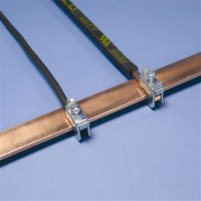
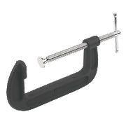
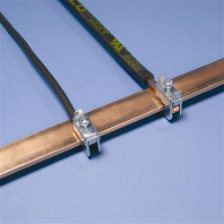
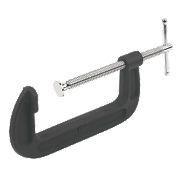

Submitted by Bill Thomson on Fri, 15/01/2016 - 19:53
Often referred to as a current clamp, a CT is in fact, not a clamp.
These are clamps
 Note the tensioning screws.
Pictured below, is an example of a YHDCsplit-core CT
Here's an example of a Magnelabsplit-core CT
In addition to the split-core type, solid core, (aka ring core) CTs are available.
Here's an example of a Magnelab solid-coreCT
A split-core CT, especially one that has a ferrite core (such as the ones made by YHDC) should never be "clamped" to the cable using any sort of packing material, because the brittle nature of the ferrite core means that it might easily be broken, thus destroying the CT. You should only clamp the CT to the cable or busbar if the housing is specifically designed to do so. Similarly, a ring-core CT should never be forced onto a cable that is too large to pass freely through the centre.
Current Transformers (CTs)
Submitted by Bill Thomson on Fri, 15/01/2016 - 19:53Often referred to as a current clamp, a CT is in fact, not a clamp.
These are clamps

Note the tensioning screws.
Pictured below, is an example of a YHDC split-core CT
Here's an example of a Magnelab split-core CT
In addition to the split-core type, solid core, (aka ring core) CTs are available.
Here's an example of a Magnelab solid-core CT
A split-core CT, especially one that has a ferrite core (such as the ones made by YHDC) should never be "clamped" to the cable using any sort of packing material, because the brittle nature of the ferrite core means that it might easily be broken, thus destroying the CT. You should only clamp the CT to the cable or busbar if the housing is specifically designed to do so. Similarly, a ring-core CT should never be forced onto a cable that is too large to pass freely through the centre.